Mieux connaître Jenny
Salut, moi c'est Jenny.
Je suis timide au début mais comme je suis aussi très curieuse et gourmande, je finis toujours par m'approcher
pour voir ce que vous faites ou ce que vous mangez. Récemment j'ai découvert que les caresses, c'est vraiment
trop bien.
Je recherche une famille douce et calme qui n'attendra rien de moi à part me voir très heureuse. Promis, après
un temps d'adaptation, je le serai.
Je devrai vivre dans un appartement 100% sécurisé avec un coapin chat. J'ai un super copain en famille
d'accueil, il s'appelle Oliver, j'adorerais être adoptée avec lui. Il est aussi timide que moi mais je vous
assure, nous sommes des braves chats.
L'adoption se fera uniquement en foyer entièrement sécurisé (si balcon ou terrasse, ils doivent être
complètement sécurisés). Jenny ne doit pas avoir accès à un jardin.
Nougat
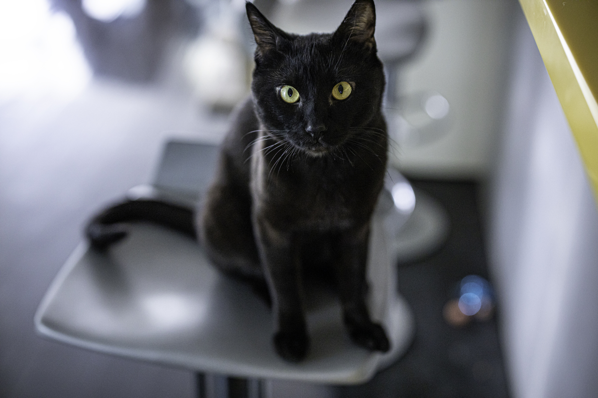
mâle
2ans
européen
adoption avec amandine
en famille d'accueil à Ever
Mieux connaître Nougat
Papillon est une adorable petite chatte, très jouette, mais qui est très timide avec les humains. Elle se laisse
caresser le bout du nez pour le moment donc avec un peu de patience, elle apprendra à apprécier les caresses.
Elle adore Zebulon, qu'elle rassure de sa présence, et souhaiterait être adoptée avec lui.
Ils s'entendent bien avec les autres chats tous les deux et ne demandent qu'à vivre une super vie de chat en
sécurité, à apprendre à faire confiance à l'humain et à devenir peut-être des chats câlins.
L'adoption se fera uniquement en foyer entièrement sécurisé (si balcon ou terrasse, ils doivent être
complètement sécurisés, si jardin, le chat ne doit pas pouvoir en sortir).
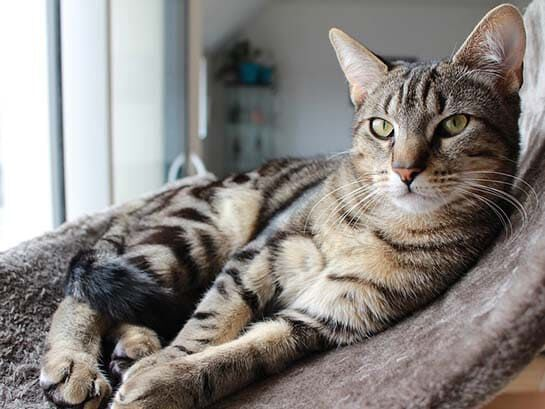
femelle
6ans
européen
adoption avec amandine
en famille d'accueil à woluwée
Mieux connaître orange
orange est une adorable petite chatte, très jouette, mais qui est très timide avec les humains. Elle se laisse
caresser le bout du nez pour le moment donc avec un peu de patience, elle apprendra à apprécier les caresses.
Elle adore Zebulon, qu'elle rassure de sa présence, et souhaiterait être adoptée avec lui.
Ils s'entendent bien avec les autres chats tous les deux et ne demandent qu'à vivre une super vie de chat en
sécurité, à apprendre à faire confiance à l'humain et à devenir peut-être des chats câlins.
L'adoption se fera uniquement en foyer entièrement sécurisé (si balcon ou terrasse, ils doivent être
complètement sécurisés, si jardin, le chat ne doit pas pouvoir en sortir).
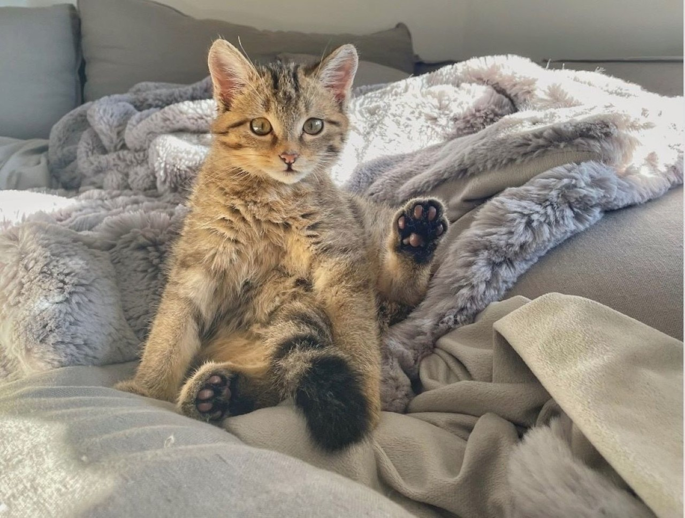
Mâle
7ans
européen
adoption avec amandine
en famille d'accueil à Ever
Mieux connaître Brick
Salut, moi c’est Brick.
J’ai été abandonné dans un jardin (suite à un déménagement?) et retrouvé affamé.
J’ai un problème cardiaque et je dois prendre un médicament tous les jours. Pour que je prenne mon médicament
dans la nourriture, je dois être chat unique.
Je ressemble à un chat de race et j’en ai aussi le caractère, un caractère parfois suspicieux envers l’humain.
Si c’est non, c’est non ! Comprenez bien, ce sont mes peurs qui me dictent parfois que je dois me protéger.
Je viendrai chercher votre compagnie si je le souhaite mais je n’ai aucune envie de jouer les amoureux sur vos
genoux ou dans vos bras.
Les câlins c’est bien mais quand je veux et pas longtemps.
Je suis curieux et je vous accompagnerai jusqu’aux toilettes une fois en confiance.
Les sorties en jardin ou terrasse sont interdites pour ma sécurité et ma santé. Je devrai vivre exclusivement à
l'intérieur.
Je cherche quelqu’un de calme et patient, sans enfant et sans autre animal; quelqu’un qui m’offrira le temps
nécessaire à mon épanouissement et me respectera; quelqu’un qui m’acceptera tel que je suis avec mon caractère;
quelqu’un qui s’occupera de ma santé pour que je puisse profiter looooooongtemps de ma vie auprès de mes
humains.
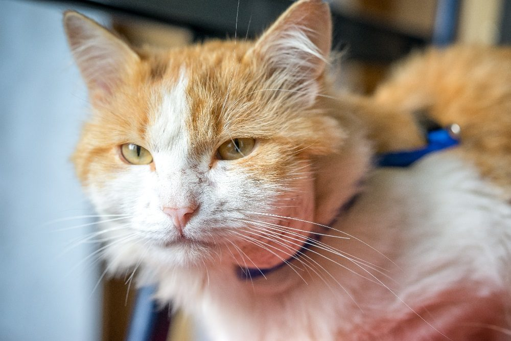
femelle
5ans
européen
adoption avec amandine
en famille d'accueil à molenbeek
Mieux connaître Milady
Milady est une magnifique jeune demoiselle aux poils soyeux.
Elle adore les câlins et vient en demander après une petite période d’observation.
Les câlins ne doivent être que pour elle, raison pour laquelle elle doit être la seule reine dans son foyer.
Elle est plutôt dominante et n’apprécie pas de partager ses humains.
Malgré son jeune âge elle est très posée et calme et conviendra à la plupart des foyers avec des personnes
calmes.
Elle apprécie les plaisirs de la vie: les câlins, la bonne nourriture et les paniers douillets.
Nous ne connaissons pas son entente avec les jeunes enfants.
L'adoption se fera uniquement en foyer entièrement sécurisé (si balcon ou terrasse, ils doivent être
complètement sécurisés, si jardin, le chat ne doit pas pouvoir en sortir).
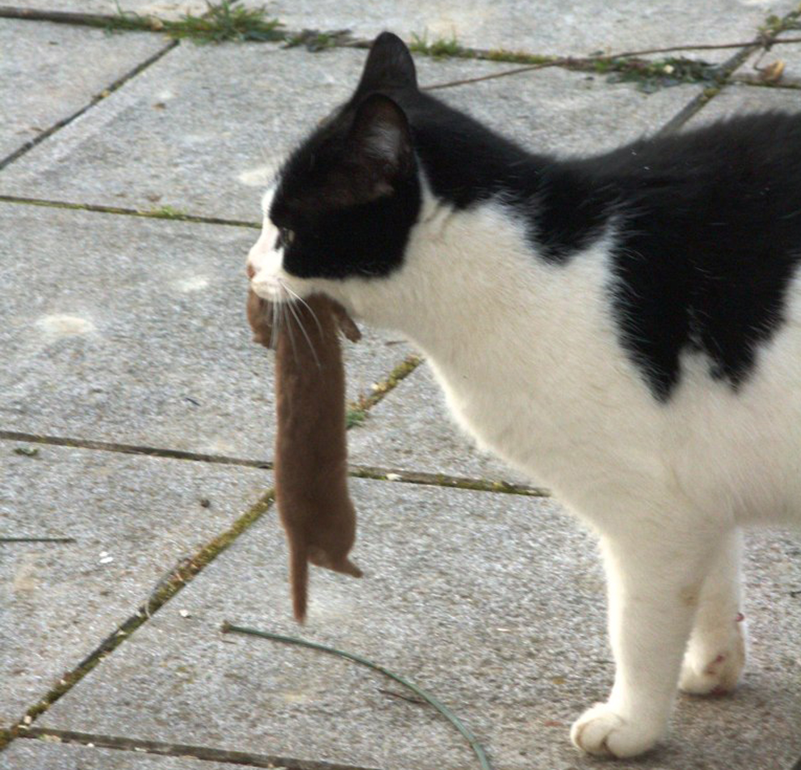
femelle
1ans
européen
adoption avec amandine
en famille d'accueil à schaerbeek
Mieux connaître Kalys
Je suis une adorable minette à la recherche de son foyer.
Je suis jouette et dynamique. Votre vie sera pimentée par ma présence joyeuse. Vous serez sollicité.e.s. pour
participer à mes parties de jeux. Je n'hésiterai pas à venir vous rappeler qu'il faut s'amuser.
Je suis très très curieuse et vive.
J'aurai de ce fait besoin d'un cadre de vie sécurisé.
Je suis aussi très câline et viendrai me glisser tout contre vous sous les couvertures.
Si vous êtes présent.e.s. et que vous cherchez une féline pour égayer votre quotidien, je suis faite pour vous.
L'adoption se fera uniquement en foyer entièrement sécurisé (si balcon ou terrasse, ils doivent être
complètement sécurisés, si jardin, le chat ne doit pas pouvoir en sortir).
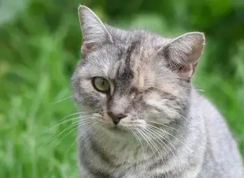
Mâle
2ans
européen
adoption avec amandine
en famille d'accueil à woluwée
Mieux connaître Tâche
Tâche est un super chat, très curieux, le meilleur sous-chef de cuisine de Bruxelles, tous les plats sont un
poil meilleur grâce à lui. C'est un vrai gourmand avec une grande préférence pour la viande.
C'est aussi un chat assez actif, il apprécie beaucoup la compagnie de son copain chat en famille d'accueil, ils
jouent beaucoup et ca serait top pour lui d'être adopté avec un coapin chat, sinon il faudra proposer des
séances de jeu régulières.
Il adorerait aussi avoir une fenêtre ou un balcon sécurisé où passer du temps et compter les pigeons qui
passent.
Tâche n'hésite à exiger à haute voix l'ouverture de la fenêtre ou son diner. C'est une pipelette mais
heureusement pas la nuit, ce qui permet à ses humains de se reposer.
Tâche ne vient pas encore faire des câlins sur les genoux mais il adore se faire caresser quand il est en mode
repos ou dodo et il profite alors vraiment des séances de caresses.
L'adoption se fera uniquement en foyer entièrement sécurisé (si balcon ou terrasse, ils doivent être
complètement sécurisés, si jardin, le chat ne doit pas pouvoir en sortir).
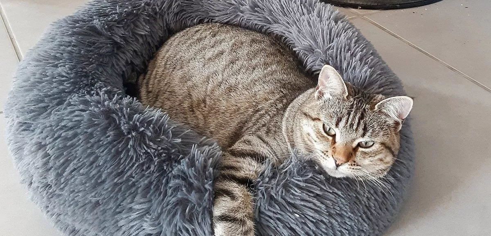
mâle
4ans
européen
adoption avec amandine
en famille d'accueil à ever
Mieux connaître Jean-Pi
Salut les amis! C'est moi, Jean-Pi gros doudou d'amour (oui, ma maman d'accueil m'appelle comme ça!).
Il paraît que je suis prêt à trouver ma famille pour la vie et je n'attends que ça!.
Comme vous le voyez, je suis un gros nounours rempli d'amour (et un tout petit peu de croquettes). Je suis très
gentil et j'aime tout le monde!
Mais mon passé n'a pas été facile, j'ai été maltraité par des méchantes personnes. Heureusement ma famille
d'accueil m'a fait oublier tout cela et elle m'a promis que, pour le reste de ma vie, je ne rencontrai que des
chouettes personnes.
Alors je recherche une famille calme, prête à recevoir plein de bisous et de câlins.
J'aime bien les autres copains chats gentils et pas dominants. Je peux être aussi le seul nounours de la maison
à condition de recevoir des tonnes d'amour!
L'adoption se fera uniquement en foyer entièrement sécurisé (si balcon ou terrasse, ils doivent être
complètement sécurisés, si jardin, le chat ne doit pas pouvoir en sortir).
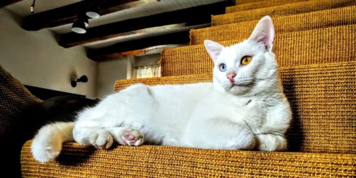
Mâle
3ans
européen
adoption avec amandine
en famille d'accueil à woluwée
Mieux connaître Louis
Bonjour, moi c’es Louis.
Quand j’ai été sauvé, je n'étais pas très en forme car la vie dans la rue c'était très dur, mais heureusement
maintenant je suis à nouveau en pleine forme et je suis à la recherche de ma famille pour la vie.
Je suis timide avec les humains au début, mais une fois en confiance, je vous montrerai que j'adore les câlins.
Néanmoins, il me faudra un foyer calme sans jeunes enfants pour évoluer au mieux et vous révéler ma véritable
personnalité.
J'ai peur des autres chats, je suis donc à la recherche d'un foyer où je serai le seul chat avec des humains
présents pour s'occuper de moi.
L'adoption se fera uniquement en foyer entièrement sécurisé (si balcon ou terrasse, ils doivent être
complètement sécurisés).
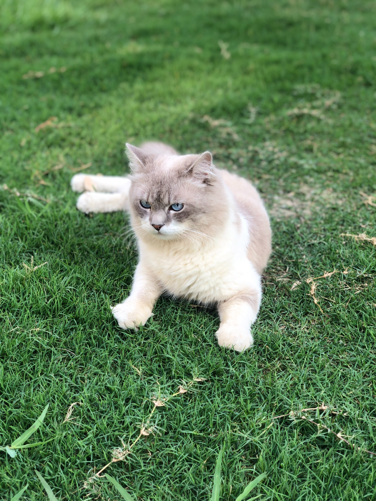
femelle
7ans
européen
adoption avec amandine
en famille d'accueil à schaerbeek
Mieux connaîtren Ariane
Ariane est une petite femelle très curieuse, elle adore jouer.
Elle est aussi demandeuse de câlins, de moments à passer avec sa famille.
Elle s'entend très bien avec les autres chats et aimerait être adoptée avec un copain chat qui serait d’accord
pour jouer avec elle.
L'adoption se fera uniquement en foyer entièrement sécurisé (si balcon ou terrasse, ils doivent être
complètement sécurisés, si jardin, le chat ne doit pas pouvoir en sortir).
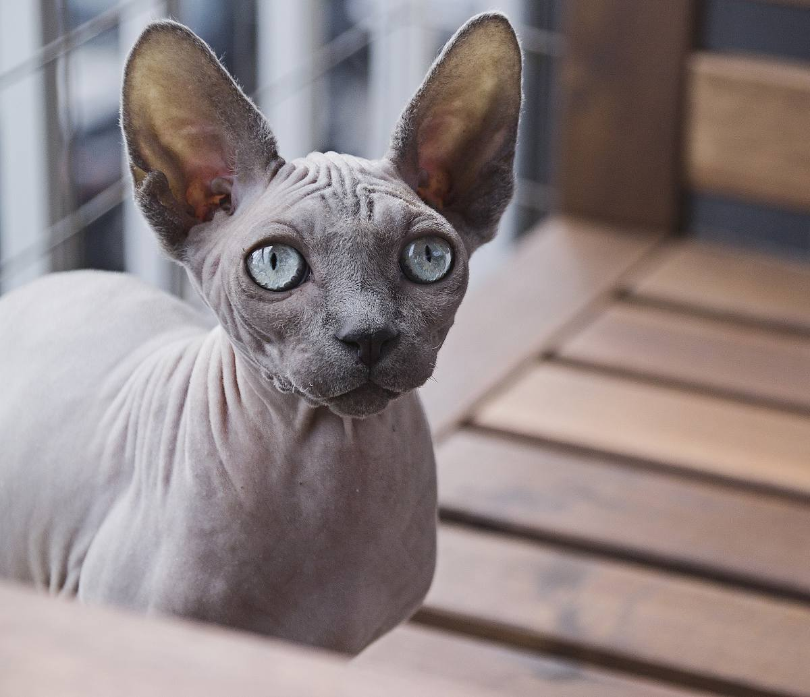
femelle
2ans
européen
adoption avec amandine
en famille d'accueil à ever
Mieux connaître Zazie
Salut, moi c’est Zazie!
Je suis une petite minette pour le moment, pleine d’amour et de câlins!
Je suis à peine méfiante quand je rencontre des inconnus, après les avoir reniflés je les adopte en un rien de
temps. Je vous suivrai partout pour m’installer confortablement près de vous, je cherche souvent les caresses et
je ronronne comme un moteur.
J’adore jouer avec les ceintures, les bouts de ficelles… et surtout les mouches, c’est ma spécialité !
Je suis aussi très gourmande et je mange de tout: pâté, croquettes… même si ce que je préfère c’est le lait. Il
faudra juste faire attention à ne me donner que de la nourriture pour chats car j'ai les intestins senssibles.
Je n’ai jamais eu de copain chat à la maison mais j’aime beaucoup m’installer près de la cage de mes copains
lapins. Donc je pense que je m'enttendrai bien avec tout le monde.
Quand il fait beau j’adore me mettre à la fenêtre et observer les oiseaux… Mais attention à mes envies d’évasion
! Je suis très intriguée par ce qui se passe dehors en général.
L'adoption se fera uniquement en foyer entièrement sécurisé (si balcon ou terrasse, ils doivent être
complètement sécurisés, si jardin, le chat ne doit pas pouvoir en sortir).
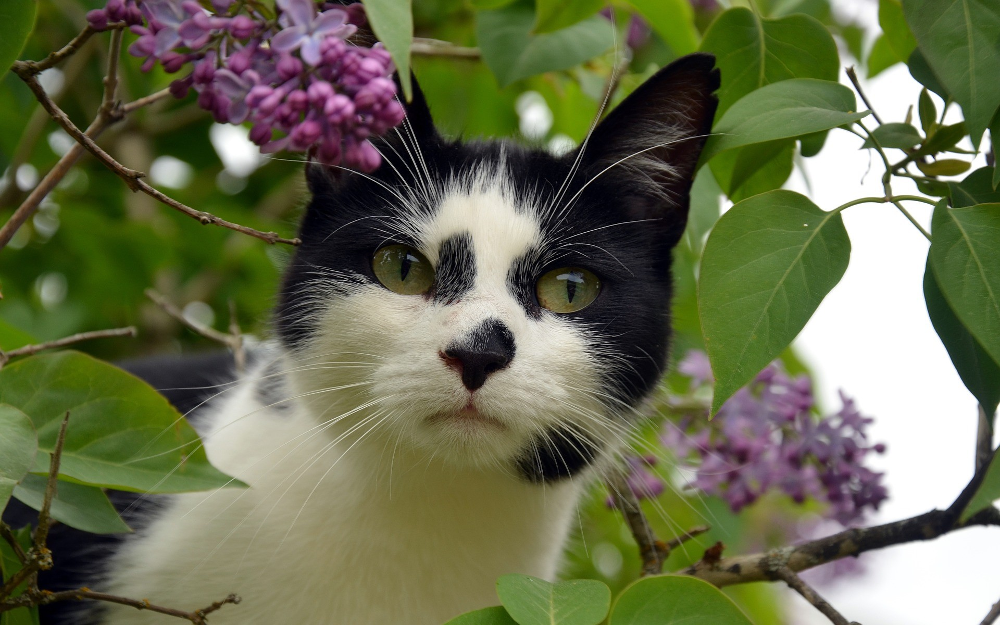
femelle
1ans
européen
adoption avec amandine
en famille d'accueil à woluwée
Mieux connaître Lenù
Lenù est une petite femelle très active.
Elle aime jouer et elle saura très bien vous faire comprendre quand elle a envie de jouer à cache-cache. Elle
connait bien son nom et adore quand on se cache et qu'on l’appelle de loin. Elle vient alors de toute vitesse
avec des grands bons.
Elle ronronne rarement mais elle est très communicative.
La nuit elle aime venir s’allonger sur le lit et elle attend le moment du réveil pour venir faire des câlins.
Elle adore la compagnie, elle n’est pas d’accord quand on ne s’installe pas près d’elle.
Elle est habituée au calme, dans un appartement sans enfants.
Elle est timide avec les personnes qu'elle ne connait pas elle se cache alors sous le lit et sort seulement
après avoir bien observé pour vérifier qu'elle peut faire confiance.
Elle adore se promener entre les plantes d’intérieur et renifler apportées par le vent quand la fenêtre est
ouverte.
L'adoption se fera uniquement en foyer entièrement sécurisé (si balcon ou terrasse, ils doivent être
complètement sécurisés, si jardin, le chat ne doit pas pouvoir en sortir).
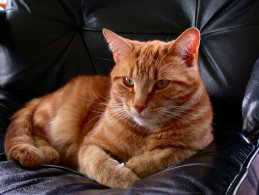
mâle
9ans
européen
adoption avec amandine
en famille d'accueil à schaerbeek
Mieux connaître Joseph
Bonjour, je m'appelle Joseph.
Je suis un minou d'environ 9 ans et je suis en pleine forme.
Je suis un chat plutot gourmand et joueur.
J'adore les câlins et la bonne compagnie mais j'aime tout de même garder mon espace de vie et je n'aime pas être
porté dans les bras.
Je ne suis pas du tout aggressif, je ne sors jamais les crocs ou les griffes mais je suis un peu timide (j'aime
bien me cacher), il faudra donc être un peu patient avec moi au début.
Je n'ai pas besoin d'accès exterieur, je préfère vivre et dormir bien au chaud.
J'aime beaucoup les humains, mais je ne m'entendrai pas avec d'autres animaux, je cherche donc un foyer rien que
pour moi.
L'adoption se fera uniquement en foyer entièrement sécurisé (si balcon ou terrasse, ils doivent être
complètement sécurisés).